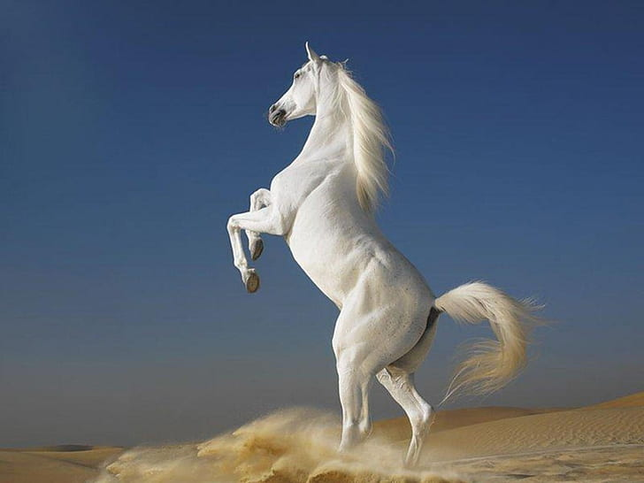
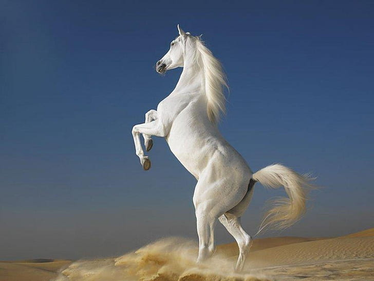

The polar bear, scientifically known as Ursus maritimus, is an iconic symbol of the Arctic and is the largest terrestrial carnivore on the planet. These magnificent creatures are superbly
adapted to their extreme environment, with a thick layer of blubber and dense fur that provide insulation against the frigid temperatures of the Arctic. Polar bears are excellent
swimmers, capable of covering long distances in the icy waters in search of their primary prey, seals. They use their keen sense of smell to locate seals beneath the ice and their
powerful limbs to break through the ice and capture their prey. Unfortunately, polar bears face a dire threat due to the rapid loss of sea ice caused by climate change, which is
diminishing their hunting grounds and impacting their ability to find food. Conservation efforts are crucial to the survival of polar bears, as they are not only a symbol of the Arctic
but also serve as a bellwether for the health of the entire ecosystem in which they live.


Arabian horses, renowned for their elegance and grace, hold a special place in the world of equines. Originating from the Arabian Peninsula, these horses are celebrated for their
distinctive features - a finely chiseled head with expressive eyes, a high tail carriage, and a sleek, arched neck. Arabian horses are not only visually striking but also known for their
remarkable endurance and intelligence. They have played a pivotal role in shaping the history of horse breeding, influencing numerous other breeds worldwide. Whether in the
context of traditional Bedouin culture or modern equestrian sports, the Arabian horse continues to captivate enthusiasts and riders with its beauty, agility, and spirited personality.
 

Foxes are intriguing creatures that inhabit various parts of the world, known for their cunning and adaptability. These members of the Canidae family come in different species and sizes,
but they often share common characteristics like a bushy tail, pointed ears, and a keen sense of smell. Foxes are renowned for their intelligence, often using their wits to outsmart
prey and predators alike. They are opportunistic hunters and omnivores, feeding on a diverse diet that can include small mammals, birds, insects, and fruits. Foxes are also famous
for their incredible agility and stealth, making them both elusive and fascinating creatures in the wild. Their presence in folklore and mythology across cultures adds to their mystique,
portraying them as symbols of slyness, cleverness, and adaptability. In the natural world, foxes play essential roles in maintaining ecosystems by helping control the populations of
various animals. Whether in the wild or as subjects of admiration, foxes continue to captivate our imaginations with their unique blend of beauty and cunning.


Deer, graceful and iconic members of the animal kingdom, hold a special place in the world of wildlife. These herbivorous mammals are known for their slender bodies, nimble
movements, and distinctive antlers, which are primarily found in males. With species like the white-tailed deer and the majestic red deer, deer are found in diverse ecosystems
worldwide, from dense forests to open grasslands. Their cautious nature and keen senses, particularly their ability to detect predators, make them fascinating creatures to observe in
their natural habitats. Beyond their ecological significance as herbivores, deer have cultural and symbolic importance in many societies, representing qualities such as grace,
gentleness, and the connection between humanity and the natural world. Deer sightings in the wild often evoke a sense of wonder and a reminder of the beauty of the wilderness.
.jpg)
Kangaroos, the iconic marsupials of Australia, are renowned for their unique adaptations and distinctive appearance. With their powerful hind legs, long tails, and distinctive hopping
locomotion, they are instantly recognizable. Kangaroos are marsupials, meaning they carry and nurse their young in a pouch. The most common species, the red kangaroo, is the
largest marsupial in the world, standing tall with a remarkable ability to cover vast distances in search of food and water. These herbivorous creatures are essential to Australia's
ecosystem, contributing to the balance of their habitats. Kangaroos have also become a symbol of Australia's wildlife and are celebrated as national icons, showcasing the beauty
and diversity of the continent's fauna.